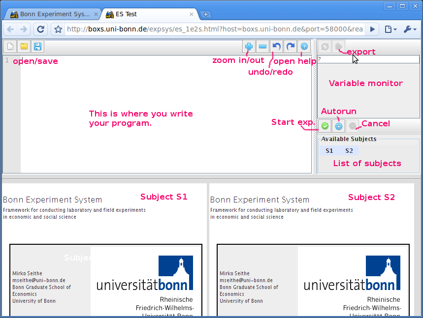
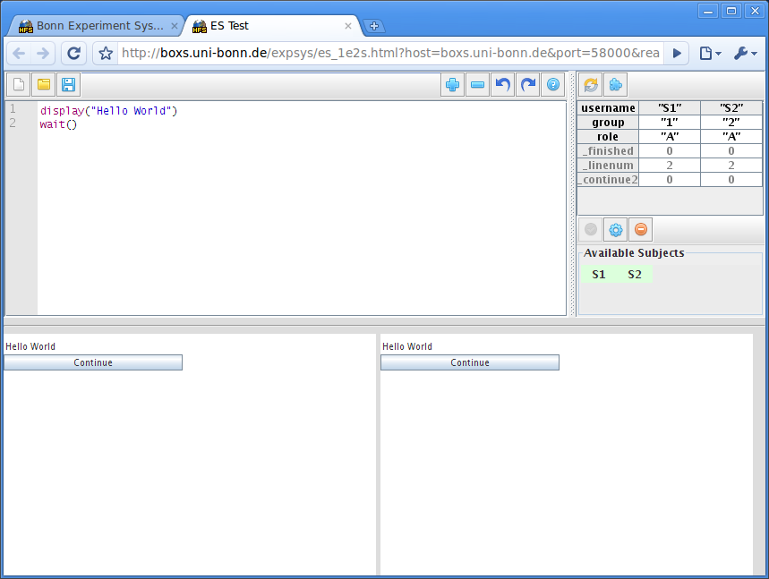
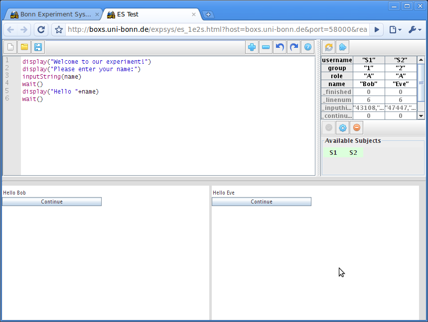

Bonn Experiment System Tutorial
This tutorial intends to show you how to use BoXS to create and conduct experiments in 9 easy steps.
1.) Open your web browser...
...and open the address
http://boxs.uni-bonn.de/.

You can use any operating system and browser you like to use BoXS, as long as they support Java applets.
For the screenshots on this page xubuntu-Linux is used as operating system and Google Chrome is used
as the browser.
2.) Click on the "Start Experiment!"-button

3.) Click on "1 Experimenter, 2 Subjects"
If you open this site for the first time, you will get a warning asking whether you
want to execute this application. Click on proceed/grant. This message will only appear once on every
computer.
If neither the experiment software as in the picture above nor the warning appears,
chances are that the Java plugin in your browser is not installed correctly.
- If you are using windows, download it here for Firefox or
Internet Explorer.
- If you use linux, install the "sun-java6-plugin"-package using your package manager.
4.) Take a look at the screen.

The layout you see is designed to help you develop your programs. It shows the experimenter view,
which is the top half, as well as two subject views, which are on the bottom half. In a real
experiment you would of course have each view on the full screen, but for developing this
layout is quite useful.
5.) Write your first program.
To do this, click on the code view in the top left area and enter:
display("Hello World")
wait()
6.) Start your experiment.
To start your experiment click on the "Start experiment"-button ( )
)

You can see that the subjects' screens now show the desired message as well as
a "Continue"-button. When you click on both "Continue"-buttons the experiment will end as
no further experiment was specified. So, you've finished your first experiment using BoXS,
congratulations! :)
7.) Write your second program.
The second program is slightly more advanced as it uses variables and user input.
Click on the code view in the top left area, delete the previous program and enter:
display("Welcome to our experiment!")
display("Please enter your name:")
inputString(name)
wait()
display("Hello "+name)
wait()
Note: In a real experiment you would probably not ask your subjects about
their name. This example is just for illustration.
Click on the "Start experiment"-button (
) when you are done.
Enter some names and click on "Continue".

As you can see the name which is entered in the first part of the experiment is successfully displayed
in the second part.
8.) Using experiment-generated data
To examine experiment-generated data have a look at the variable monitor. The
variable monitor displays both the variables you define as well as automatically generated
variables (which are displayed in grey).

The first row displays the usernames, which are "S1" and "S2" in this case.
In an actual laboratory experiment you would pick something more specific like "Room11" and "Room12".
(more on this topic can be found in the documentation).
The fourth row contains the values of the generated "name"-variable, in this case "Bob" and "Eve".
If you are interested in how the subjects behaved, you might also be interested in the "_inputhistory_name"-variable.
This automatically generated variable tells you at which time (in msecs) he/she entered which value. Using this
variable you can find out when which key was pressed. In this case Bob and Eve were quite the procrastinators,
requiring about 40 seconds just to enter their names. :)
9.) Exporting experiment-generated data
To export your data click on the "Export data"-button (

).
A file dialog will appear. Choose the desired location for the file and name it "test.csv". Data is
saved as CSV, which can be read by both spreadsheet applications
like Excel, as well as statistics software like Stata.
After saving the file, open it using a spreadsheet application. When asked about the delimiter, select "tabulator".
Conclusion
Congratulations, you successfully completed the tutorial and have therefore written two
experiments. If you want to learn more about BoXS, I recommend reading the
general information and the
code examples. The
documentation contains information about all available
commands and their usage.